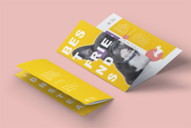
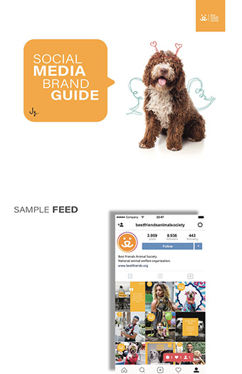

University of Miami
Coral Gables, United States, 09/2018-present
Master of Arts in Communication
Major in Public Relations
Date of birth: 19/06/1996
Nationnality: China
Phone number: 7865853840
Email address: hoodynicyao@gmail.com
Problem solver with excellent project and time management skills and a Master’s degree in PR. Coming with strong social media knowledge, professional strategic communication skills, and expert skills of design software.
Coral Gables, United States, 09/2018-present
Master of Arts in Communication
Major in Public Relations
Chongqing, China, 09/2014-06/2018
Bachelor of Arts in Communication
Major in Broadcast and Television Journalism
VNK Cosmetics, Shanghai, China
02/2018-05/2018
CDTV Culture and Entertainment Channel, Chengdu, China
01/2017-02/2017
Beijing Warrior Media, Beijing, China
06/2016-09/2016
University of Miami, 2019
First Place— Brochure Design
Honorable Mention— Social Media
